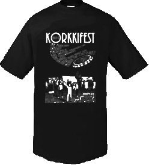

Tänäkin vuonna myyntiin tulee virallisia festaripaitoja, tarkempaa tietoa myöhemmin.
Tämän vuoden tapahtumaan teetämme T-paitoja, joihin painetaan festariteeman mukainen ulkoasu ja esiintyvien yhtyeiden nimet. Alla olevassa kuvassa oleva paita printteineen on vain viitteellinen, viime vuoden tapahtuman teeman pohjalta tehty malli. Paidan lopullinen ulkoasu selviää vasta juuri ennen tapahtumaa. Paitaa tilataan yksivärisenä, alustavien suunnitelmien mukaan mustana. Tarjolla on koot S, M, L ja XL, lisäksi pyrimme mahdollisuuksien mukaan tilaamaan myös naisten mallia. Järjestäjät pidättävät kaikki oikeudet paitamuutoksiin. Paitojen myynnin tuotto käytetään suoraan festarin järjestämisen kuluihin.
Kun tilaat paidan etukäteen, varmistat ettet jää ilman omaa kokoasi ja saat paidan edullisemmin. Toki paitoja koitetaan saada myyntiin joitain kappaleita myös itse tapahtumaan. Paidan hinta paikan päällä tulee olemaan 20€. Kun tilaat paidan etukäteen, hinta on vain 15€.
Lähetä tilauksesi osoitteen info@korkki.fi ja ilmoita viestissäsi paitamäärä, paitojen koot, mahdolliset toiveet naisten mallista, koko nimesi ja puhelinnumerosi. Tämän jälkeen maksa paitatilauksesi Koutain Reserviupseerikerho ry:n tilille 15.7.2011 mennessä. Tilinumero on 313130-1232958. Tilatut paidat jaetaan viimeistään tapahtumassa.
Tee tilauksesi ajoissa!